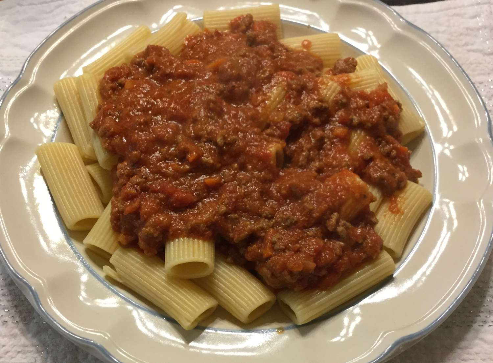

Slow Cooker Bolognese

Description:
A very thick and hearty Bolognese meat sauce simmered in the slow cooker.
Fettuccine Alfredo Ingredients
- Olive Oil: 2 tablespoons.
- Baby Carrots: 1 cup finely chopped.
- Onion: finely chopped.
- Garlic: 2 cloves minced.
- Ground Beef: 1 pound lean.
- Whole Milk: 1 1/2 cups divided.
- Crush Tomatoes: 28oz can.
- Tomato Paste: 6oz can.
- Dried Basil: 1 teaspoon.
- Dried Oregano: 1 teaspoon.
- Salt: 1/2 teaspoon.
- Ground Black Pepper: 1/2 teaspoon.
- Crushed Red Pepper Flakes: 1/4 teaspoon.
- Parmesan Cheese: 1/4 cup grated.
How to Make Bolognese sauce Step-By-Step:
Here’s a brief overview of what you can expect when you make homemade Bolognese:
- Heat olive oil in a large skillet over medium heat. Add carrots, onion, and garlic; sauté until tender, about 10 minutes. Add ground beef; cook and stir, breaking up the meat as it cooks, until browned, 5 to 7 minutes. Drain off excess fat from the skillet.
- Pour in 1 cup milk and bring to a simmer. Reduce the heat to medium-low and simmer until milk is absorbed, about 15 minutes.
- Transfer beef mixture to a slow cooker and set to High. Stir in crushed tomatoes, tomato paste, basil, oregano, salt, pepper, and red pepper flakes. Cover and cook for 2 hours. Stir in remaining 1/2 cup milk and Parmesan cheese until well combined; continue to cook for 2 more hours.